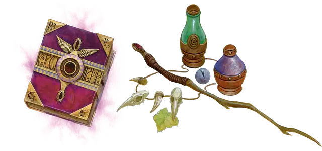

Лекарь
Healer

Вы способный медик, что позволяет быстро залечивать раны и возвращать союзников в строй. Вы получаете следующие преимущества:
- Когда вы используете комплект целителя для стабилизации умирающего существа, это существо также восстанавливает 1 хит.
- Вы можете действием потратить одно использование комплекта целителя, чтобы позаботиться о существе и восстановить ему 1к6 + 4 хита, а также дополнительные хиты, равные его максимальному количеству Костей Хитов. Это существо не сможет повторно восстанавливать хиты от этой черты, пока не закончит короткий или продолжительный отдых.